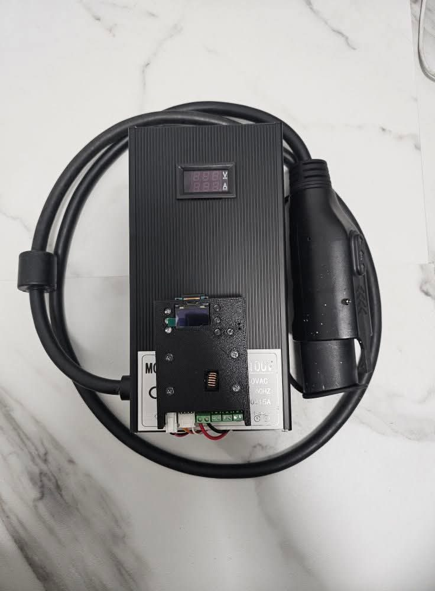
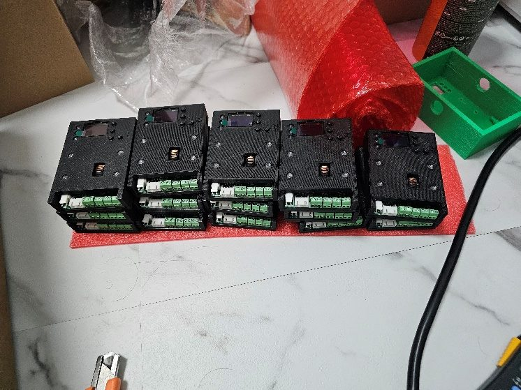
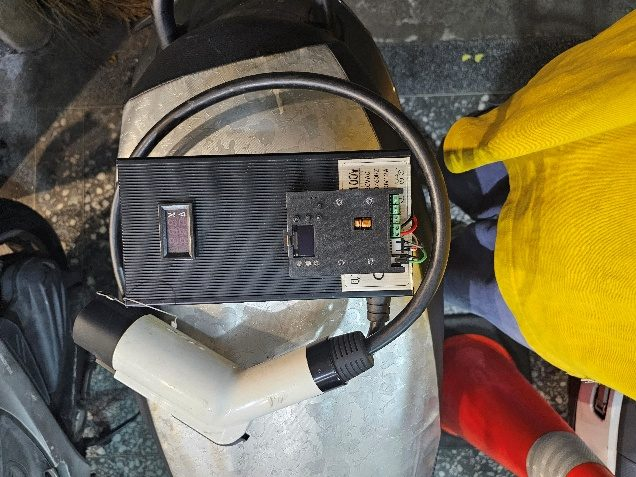
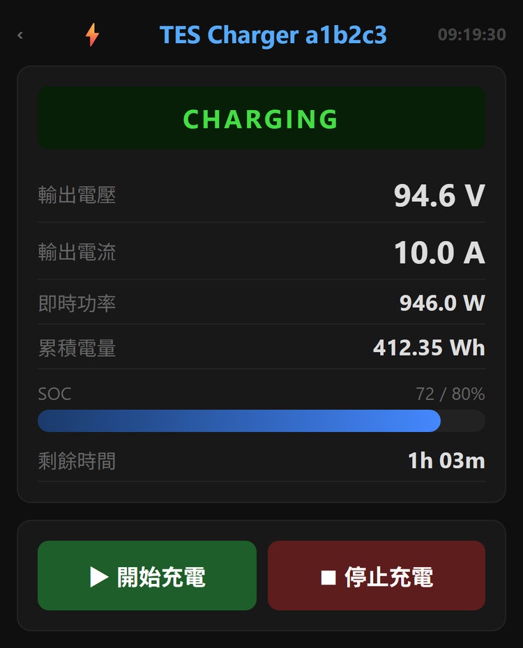
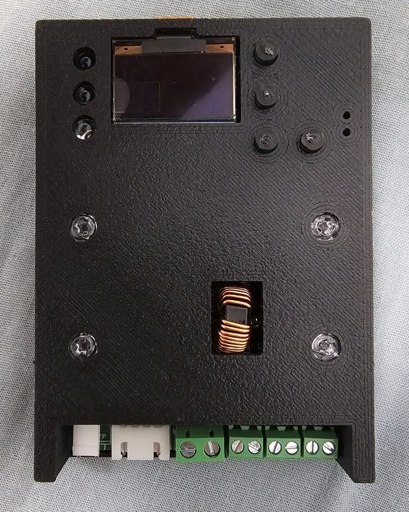
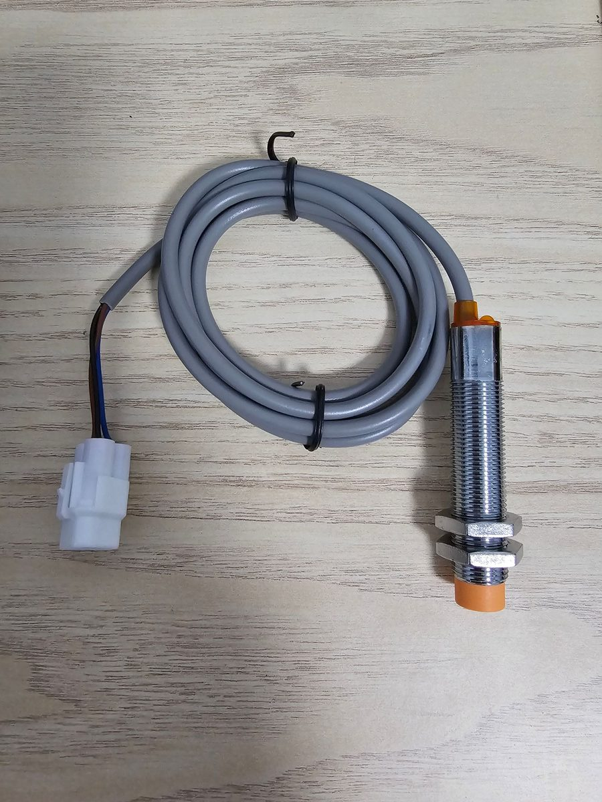
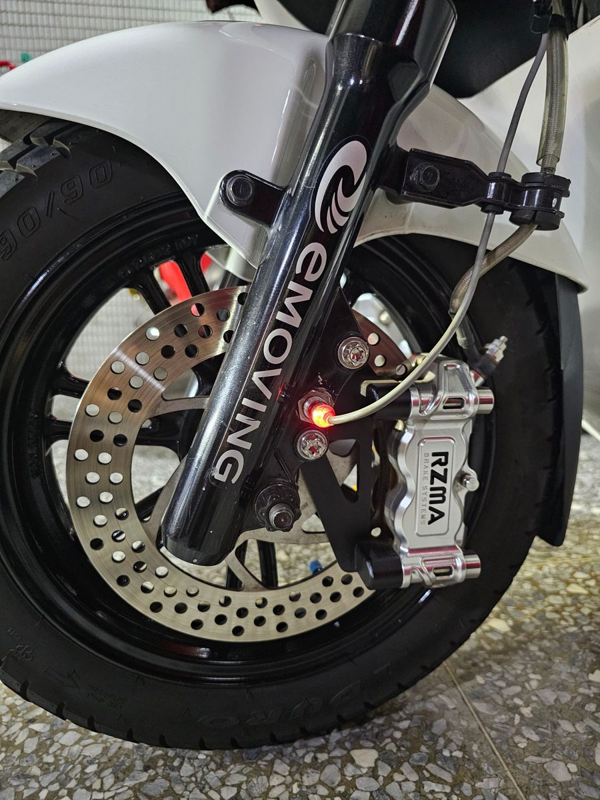
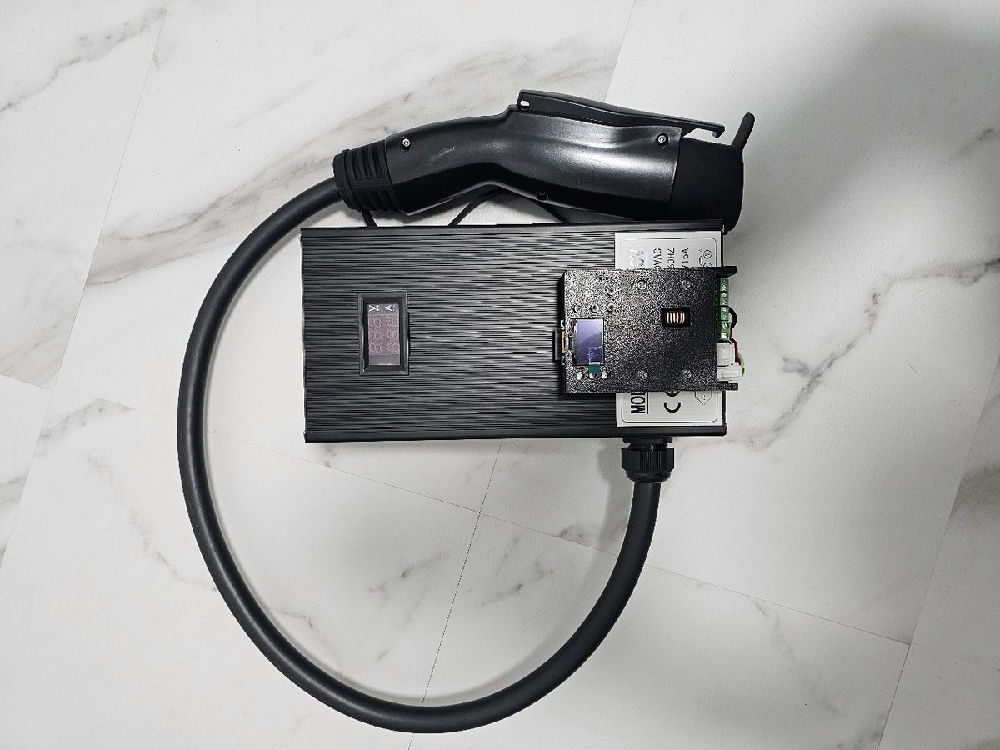
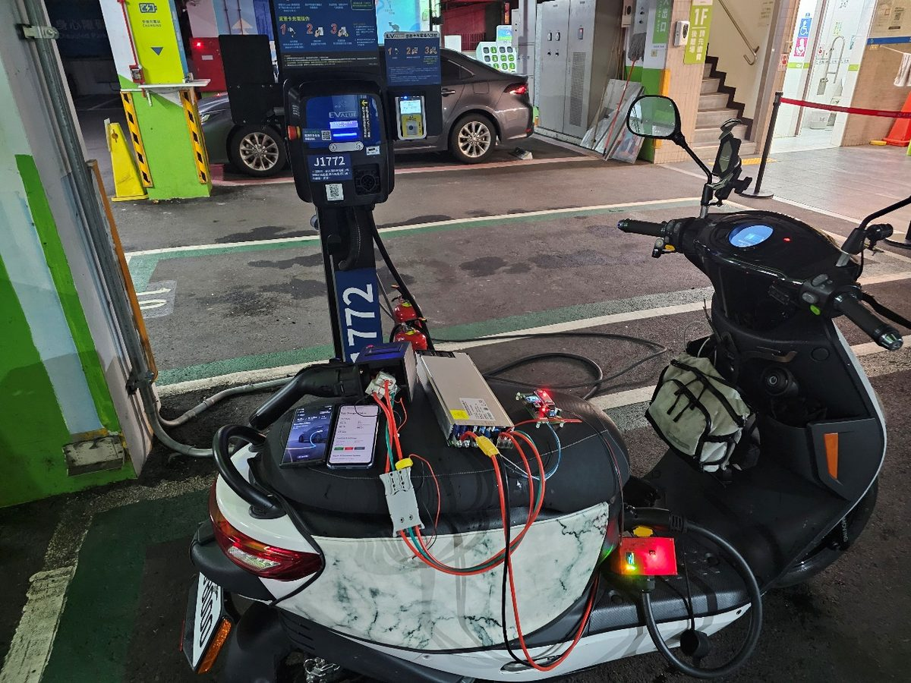

我自己也是 iE125 的車主。這裡整理了我目前提供的兩項服務、周邊零件、研究中與暫停販售的東西，以及各自能做到什麼、做不到什麼。


TES 車主的充電困境
騎支援 TES 快充規格電動機車（eMoving iE125、ZAU ES-2000 這類）的人，大概都遇過這幾件事：
- 原廠有快充站，但站點太少。加上電動機車的續航本來就不長，出遠門幾乎不可能，路線只能繞著快充站排。
- 日常能依靠的只剩原廠隨車充電器：360～600 W，充飽要 5～9 小時。
- 原廠充電器沒有任何參數可以設定，充到哪了也看不到。
- 原廠充電器的妥善率並不好。車友之間很常見的狀況是：充電器長時間運作過熱，電源板就這樣燒掉了。
- 汽車用的 AC 慢充樁（J1772 / Type 2）到處都是，偏偏機車沒辦法直接插。
iE125 原廠充電器改裝
原廠充電器由三個部分組成：主電源、控制板、充電槍。我的做法是只保留充電槍，主電源和控制板全部換成我自己的——控制板用的就是下方服務二那塊 TES 快充控制板。
- 改裝後功率上限 1 kW / 10 A（原廠 360～600 W）
- 原廠 360 W 與 600 W 兩款充電器都能改
- 插一般 110V 插座時，1 kW 輸出離插座的容量上限（1650 W）還有餘裕
- 最容易過熱燒掉的電源板會被整個換掉，所以電源板已經燒掉的原廠充電器，只要充電槍完好，一樣可以改
- 可以連 WiFi，手機開網頁就能看即時電壓、電流、目前電量
- 可以設定「充到幾 % 就停」（例如只充到 80% 顧電池）；排程、推播、充電紀錄、OTA 更新也都有
- 這些功能要先連上 WiFi、在手機上設定才用得到；用不用、用多少，看個人需求
- 車輛本身完全不動


為什麼連控制板都換掉？
原廠控制板只負責基本充電：看不到充電狀態、不能設定充到幾 % 就停，輸出上限固定在原廠板上，而且是專車專用。換成自研的 TES 快充控制板之後：
- 手機可以看即時電壓、電流、電量，可以設定充電上限、排程和推播
- 韌體可以透過 OTA 更新，之後的新功能，改裝過的充電器也拿得到
- 功率由控制板決定，不會被原廠板限制。目前 1 kW 的上限來自原廠充電槍的線徑；換上規格更高的充電槍，就有往上加的空間（下方 1.5 kW 那組就是這樣做出來的）
- 不再專車專用：控制板走的是 TES 通用規格，理論上只要是 TES 規格的車、而且充電器的電源電壓高於車的電池電壓，都可以使用（iE125 以外的車款尚未實測，見常見問題）
為什麼上限是 1 kW，不能再高？
因為充電槍保留的是原廠的，而 iE125 原廠充電槍的線徑太細，撐不住更大的電流。線徑撐不住就是撐不住，我不會為了數字好看去超用它，那是會出事的。
TES 快充控制板
這塊控制板是整套充電設備的「大腦」：它實作了車輛原本就在用的 TES-0D-02-01 快充通訊協定，透過 CAN Bus 跟車輛的電池管理系統（BMS）做正規的充電交握，再去指揮整流模組輸出。

搭配整流模組及副廠充電槍，就能透過車上原本的 TES 快充接口充電——包括轉接使用汽車的 AC 慢充樁（J1772 / Type 2）。充電槍需要自行向中國的廠商訂做，這部分我不提供。
- 控制器設計上限：120 V / 100 A
- 手機開網頁就能看：即時電壓、電流、目前電量（SOC）、預估剩餘時間
- 可設定充到幾 % 就停、最大電壓電流、停止條件
- 排程充電（離峰電價適用）、開始／完成／異常推播到手機
- 最近 20 次充電紀錄：時長、充了幾度、電量從幾 % 充到幾 %、停止原因
- OTA 無線更新韌體；車輛本身完全不動
iE125／勁炫125 用輪速感應器
- 副廠替換用的輪速感應器
- M12 規格，安裝時需要擴孔
- 不提供安裝服務


研究中與暫停販售
下面兩樣目前都沒有在賣，寫出來是讓大家知道做得到什麼。
1.5 kW / 15 A 全副廠充電器
從控制板、主電源到充電槍，完全不使用原廠零件的 iE125 充電器：控制板與電源是我自己開發的，充電槍是副廠訂做，和原廠充電器一樣經過 TES 規格的充電交握。這組的充電槍線徑其實用到 30 A 都沒問題，15 A 是我刻意設的上限，原因在插座：
- 一般 110V 插座的容量上限是 1650 W
- 電源本身有轉換損耗，輸出 1.5 kW 時，插座端吃的電已經貼近這個上限
- 老舊的電線和插座長時間用到這麼滿，本身就有風險
這組曾經上架販售，但定位比較尷尬：在家充電可以慢慢充，用不到這麼大的功率；帶出門或臨時有急用，又不夠快。加上副廠充電槍取得不易、成本壓不下來，目前暫停販售（賣場顯示缺貨），現在是家人在日常使用。
如果之後能找到穩定的充電槍來源，也把成本壓下來，不排除降價後重新上架。

6 kW 直流快充研究平台
用我的控制板搭配工業整流模組以及副廠充電槍組成，iE125 實測 6 kW / 66 A，0→80% 約 30 分鐘，可以轉接汽車的 AC 慢充樁充電。

但我不販售整套直流快充系統。我不認為它目前安全到可以讓一般人買回去使用，也還沒有一個我願意交出去的成熟方案。現階段的做法是：懂的人買控制板回去，自行搭配、自行組裝、自行負責。
我不做「暴力改裝」
有一種做法是繞過車輛的充電接口，直接把電打進電池。常見的形式是打開原廠電池的外殼，從電池拉出一條並聯線，再用外接充電器從這條線直接充電；有些還會順便並聯一組增程電池。
會這樣繞，是因為要從車上的 TES 接口充電，充電器必須先透過 CAN Bus 和車輛的 BMS 完成 TES-0D-02-01 規定的充電交握，車輛才會打開充電迴路；交握做不出來，就只剩下繞過接口、直接接電池這條路。這種做法我不做，原因有四個：
- 電池管理系統（BMS）完全沒有參與這次充電，電流、溫度、單體電壓的保護邏輯等於被關掉了。
- 沒有停止機制。充飽了誰來斷？
- 如果還並聯了增程電池，那組電池不在原車 BMS 的管理範圍內，車輛不知道它存在。
- 要打開電池外殼，車輛端也一看就知道，保固直接沒了；而多數車友的電池是租的。
我的控制板走的是反方向：把這套交握完整做出來，整個充電過程要多少電壓、多少電流、什麼時候該停，都是車輛自己的 BMS 在決定，控制板只負責忠實地跟隨它的要求。
有些話要先講清楚
- 原廠充電器改裝的上限是 1 kW / 10 A，受限於保留下來的原廠充電槍線徑，這是物理限制，加錢也不會變快。
- 家用 110V 插座的容量上限是 1650 W。老舊的電線與插座長時間接近滿載有風險，這也是我設定充電器功率上限時的考量。
- 控制板只適合具備高壓直流經驗的人。整流模組的選配、充電槍的訂做、線材、保護與組裝都要自己負責。
- CAN Bus 接錯或短路，會造成車輛 BMS 永久性損壞。我在開發初期就燒過一台車的 CAN 埠，那是早期洞洞板時期外購 CAN 模組的瑕疵；現在的控制板已經是穩定的正式電路板，這條提醒是寫給要自己接線的人。
- 6 kW / 30 分鐘是我自己研究平台的實測結果，不是控制板的保證值。實際能做到多少，取決於整流模組、充電槍線徑和現場進線容量。
- 控制板與改裝皆未經 BSMI、UL 等安規認證，性質是個人研發的技術方案，不是通過認證的量產商品。
- 任何第三方補能設備都可能影響原廠保固，請自行評估。
這些東西你可以自己查證
控制板的韌體與硬體設計是公開的，任何懂的人都可以去看：
- GitHub 開源專案（原始碼、PCB 設計檔、3D 機構圖、技術文件）
- 線上燒錄工具（瀏覽器直接刷韌體）
- Mobile01 開發成果分享文
開源專案持續開發中，已發布的韌體與線上燒錄工具都可以直接使用。截至 2026 年 9 月，在 GitHub 上搜尋「TES-0D-02-01」，公開原始碼的 TES 充電控制器只有這一個。
常見問題
我的車可以用嗎？
改裝的對象是 iE125 的原廠充電器。改裝後換成 TES 快充控制板，理論上只要是 TES 標準（TES-0D-02-01）的車、而且充電器的電源電壓高於車的電池電壓，都可以使用，例如 eMoving iE125、ZAU ES-2000。除以上這兩款車以外都沒有測試過，有興趣的可以和我聯絡幫助我測試。
我的充電器電源板已經燒掉了，還能改嗎？
可以，只要充電槍完好。改裝本來就只保留充電槍，主電源和控制板都會換成我自己的。
車子要動到嗎？
不用。兩項服務都不動車，改的是充電器，接口一樣是 TES 規格。
改裝後可以多快？
上限 1 kW / 10 A，比原廠的 360～600 W 快，但做不到 30 分鐘等級的快充。原因是保留下來的原廠充電槍線徑太細。
那 1.5 kW 那組可以買嗎？
目前缺貨。之前有上架過，但定位尷尬、副廠充電槍又難取得，所以暫停販售。之後若能找到穩定的充電槍來源並降低成本，可能會重新上架。
有沒有完全不用原廠零件的 iE125 充電器？
我做過一組 1.5 kW / 15 A 的：控制板、主電源都是自己開發，充電槍是副廠訂做，一樣走 TES 規格的充電交握，由車輛的 BMS 決定電壓、電流和什麼時候停。目前暫停販售，詳見上方「研究中與暫停販售」。
打開電池拉並聯線、再用外接充電器從並聯線充電，跟你的做法有什麼不同？
那種做法是繞過充電接口直接充電池，車輛的 BMS 沒有參與這次充電；如果還並聯了增程電池，那組電池也不在 BMS 的管理範圍內。我的充電器與控制板都是從車上原本的 TES 充電接口，透過 CAN Bus 和 BMS 完成充電交握，車子本身完全不動。詳見上方「我不做『暴力改裝』」。
為什麼不直接賣 6 kW 的整套系統？
因為我不認為它目前安全到可以交給一般人使用。那是我的研究平台，還沒有成熟到可以販售的方案。與其賣一個我自己都不放心的東西，不如先不賣。
我沒有高壓經驗，可以買控制板試試看嗎？
不建議。控制板本身不含整流模組和充電槍，要自己選配、訂做、組裝，處理的是上百伏特的直流電，接錯還可能燒掉車上的 BMS。請選原廠充電器改裝。
會不會傷電池？
全程經過車輛的正規充電流程，不會超過車輛允許的範圍。但充電功率越大，對電池的負擔本來就越大；兩項服務都能設定充到幾 % 就停，若要保護電池可以把充電電量設低一點（不過大部分車友的電池是租的，照常充滿也沒問題，看個人習慣）。
外縣市可以嗎？
工作室在新北中和，外縣市請先透過 Facebook 粉專私訊討論。
聯絡
洽詢請透過 Facebook 粉專私訊；控制板與輪速感應器可直接在線上賣場購買（店到店寄送，或新北中和面交）。技術問題也歡迎到社群討論。